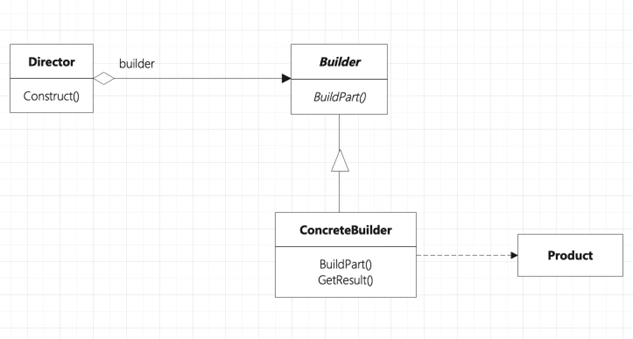

首页 > 编程笔记
Python建造者模式（附带源码）
肯德基有薯条、鸡腿、鸡翅、鸡米花、可乐、橙汁、火腿汉堡、牛肉汉堡、鸡肉卷等单品，也有很多套餐。
比如，套餐1包括鸡翅、可乐、薯条；套餐2包括鸡腿、火腿汉堡、橙汁、薯条……
这种由各种各样的单品生成各种套餐的模式被称为建造者模式。
建造者模式将一个复杂对象的“构建”与它的“表示”进行分离，使得同样的构建过程可以创建不同的表示。
建造者模式与工厂方法模式是非常相似的。构建与表示分离和创建不同的表示对于工厂方法模式同样具备。建造者模式唯一区别于工厂方法模式的是针对复杂对象的构建。
也就是说：
当需要构建的产品具备复杂创建过程时，可以抽取出共性构建过程，然后交由具体实现类自定义构建流程，使得同样的构建行为可以生产出不同的产品，分离了构建与表示，使构建产品的灵活性大大增加。
建造者模式（见图1）主要包含以下4种角色：
理解了建造者模式的4种角色，其实就已经掌握建造者模式的真谛：
这里列举一个现实世界的场景来理解建造者模式的实现。比如某快餐店的菜单上有三大类食品，分别是主食类、小食类和饮料类。每个大类别下又含有对应的单品，包含汉堡、鸡翅、薯条和可乐等。根据客人选择的单品可以一步一步来生成各种订单。
请看下面的 Python 代码：
每一个具体建造者都是独立的，与其他的具体建造者无关，因此可以很方便地替换具体建造者或增加具体建造者，用户使用不同的具体建造者可以得到不同的产品对象。由于导演者类针对抽象建造者编程，因此增加新的具体建造者时无须修改原有类库的代码，系统扩展方便，符合开闭原则。在编写代码时，代码重用率是尤为重要的。
用户可以更为精细地控制产品的创建过程，将复杂产品的创建步骤分解在不同的方法中，使得创建过程更加清晰，也更方便用户使用程序来控制创建过程。
如果产品的内部变化复杂，则可能需要很多具体建造者类实现这种变化，这会导致系统变得庞大，会增加系统的理解难度和运行成本。
比如，套餐1包括鸡翅、可乐、薯条；套餐2包括鸡腿、火腿汉堡、橙汁、薯条……
这种由各种各样的单品生成各种套餐的模式被称为建造者模式。
建造者模式将一个复杂对象的“构建”与它的“表示”进行分离，使得同样的构建过程可以创建不同的表示。
建造者模式与工厂方法模式是非常相似的。构建与表示分离和创建不同的表示对于工厂方法模式同样具备。建造者模式唯一区别于工厂方法模式的是针对复杂对象的构建。
也就是说：
- 如果是创建简单对象，我们通常使用工厂方法模式进行创建；
- 而如果是创建复杂对象，那么此时就可以考虑使用建造者模式。
当需要构建的产品具备复杂创建过程时，可以抽取出共性构建过程，然后交由具体实现类自定义构建流程，使得同样的构建行为可以生产出不同的产品，分离了构建与表示，使构建产品的灵活性大大增加。

图1：建造者模式
图1：建造者模式
建造者模式（见图1）主要包含以下4种角色：
- 抽象建造者（Builder）：主要用于规范产品类的各个组成部分，并提供一个返回完整产品的接口。
- 具体建造者（Concrete Builder）：实现抽象建造者规定的各个方法，返回一个具有好的控件的具体产品。
- 产品（Product）：构建相当复杂的类型，建造者最终创建的产品类型。
- 导演者（Director）：指导抽象建造者以特定行为构建出产品，并将其返回给用户。
理解了建造者模式的4种角色，其实就已经掌握建造者模式的真谛：
- 建造者模式最终返回一个具体的构建复杂的产品；
- 系统中产品可能只有一种类型或多种类型，但对某些产品族来说，它们具备相同的行为，因此对这些共性行为进行抽象，抽离出抽象建造者；
- 而对这些行为的具体构建过程，则交由具体建造者负责，不同的具体建造者会构建出不同表示的产品；
- 而具体要构建出哪种产品，由导演者决定。导演者会选择不同的具体建造者，指导它构建出产品。
这里列举一个现实世界的场景来理解建造者模式的实现。比如某快餐店的菜单上有三大类食品，分别是主食类、小食类和饮料类。每个大类别下又含有对应的单品，包含汉堡、鸡翅、薯条和可乐等。根据客人选择的单品可以一步一步来生成各种订单。
请看下面的 Python 代码：
class Burger():
"""
主食类：名字和价格
"""
name = ""
price = 0.0
def getPrice(self):
return self.price
def setPrice(self, price):
self.price = price
def getName(self):
return self.name
class cheeseBurger(Burger):
"""
奶酪汉堡
"""
def _ _init_ _(self):
self.name = "cheese burger"
self.price = 10.0
class spicyChickenBurger(Burger):
"""
香辣鸡汉堡
"""
def _ _init_ _(self):
self.name = "spicy chicken burger"
self.price = 15.0
class Snack():
"""
小吃类：名字、价格和类型
"""
name = ""
price = 0.0
type = "SNACK"
def getPrice(self):
return self.price
def setPrice(self, price):
self.price = price
def getName(self):
return self.name
class chips(Snack):
"""
薯条
"""
def _ _init_ _(self):
self.name = "chips"
self.price = 6.0
class chickenWings(Snack):
"""
鸡翅
"""
def _ _init_ _(self):
self.name = "chicken wings"
self.price = 12.0
class Beverage():
"""
饮料
"""
name = ""
price = 0.0
type = "BEVERAGE"
def getPrice(self):
return self.price
def setPrice(self, price):
self.price = price
def getName(self):
return self.name
class coke(Beverage):
"""
可乐
"""
def _ _init_ _(self):
self.name = "coke"
self.price = 4.0
class milk(Beverage):
"""
牛奶
"""
def _ _init_ _(self):
self.name = "milk"
self.price = 5.0
class order():
"""
订单对象，一个订单中包含一份主食、一份小吃、一瓶饮料
"""
burger = ""
snack = ""
beverage = ""
def _ _init_ _(self, orderBuilder):
self.burger = orderBuilder.bBurger
self.snack = orderBuilder.bSnack
self.beverage = orderBuilder.bBeverage
def show(self):
print("Burger:%s" % self.burger.getName())
print("Snack:%s" % self.snack.getName())
print("Beverage:%s" % self.beverage.getName())
# 建造者
class orderBuilder():
"""
orderBuilder就是建造者模式中所谓的“建造者”，
将订单的构建与表示分离，以达到解耦的目的。
在上面订单的构建过程中，如果将order直接通过参数定义好（其构建与表示没有分离），
同时在多处进行订单生成，那么需要修改订单内容时
则需要一处一处去修改，业务风险也就提高了不少
"""
bBurger = ""
bSnack = ""
bBeverage = ""
def addBurger(self, xBurger):
self.bBurger = xBurger
def addSnack(self, xSnack):
self.bSnack = xSnack
def addBeverage(self, xBeverage):
self.bBeverage = xBeverage
def build(self):
return order(self)
# Director类
class orderDirector():
"""
在建造者模式中，还可以添加一个Director类，用以安排已有模块的构造步骤。
当建造者中有比较严格的顺序要求时，该类会有比较大的用处
"""
order_builder = ""
def _ _init_ _(self, order_builder):
self.order_builder = order_builder
def createOrder(self, burger, snack, beverage):
self.order_builder.addBurger(burger)
self.order_builder.addSnack(snack)
self.order_builder.addBeverage(beverage)
return self.order_builder.build()
# 场景实现
if _ _name_ _ == "_ _main_ _":
order_builder = orderBuilder()
order_builder.addBurger(spicyChickenBurger())
order_builder.addSnack(chips())
order_builder.addBeverage(milk())
order_1 = order_builder.build()
order_1.show()
建造者模式的适用场景
- 需要生成的产品对象有复杂的内部结构，这些产品对象具备共性。
- 隔离复杂对象的创建和使用，并使得相同的创建过程可以创建不同的产品。
建造者模式的优点
在建造者模式中，客户端不必知道产品内部组成的细节，将产品本身与产品的创建进行解耦，使得相同的创建过程可以创建不同的产品对象。每一个具体建造者都是独立的，与其他的具体建造者无关，因此可以很方便地替换具体建造者或增加具体建造者，用户使用不同的具体建造者可以得到不同的产品对象。由于导演者类针对抽象建造者编程，因此增加新的具体建造者时无须修改原有类库的代码，系统扩展方便，符合开闭原则。在编写代码时，代码重用率是尤为重要的。
用户可以更为精细地控制产品的创建过程，将复杂产品的创建步骤分解在不同的方法中，使得创建过程更加清晰，也更方便用户使用程序来控制创建过程。
建造者模式的缺点
建造者模式所创建的产品一般具有较多的共同点，其组成部分相似，如果产品之间的差异较大，例如很多组成部分不相同，则不适合使用建造者模式，因此其使用范围受到一定的限制。如果产品的内部变化复杂，则可能需要很多具体建造者类实现这种变化，这会导致系统变得庞大，会增加系统的理解难度和运行成本。
关注公众号「站长严长生」，在手机上阅读所有教程，随时随地都能学习。内含一款搜索神器，免费下载全网书籍和视频。

微信扫码关注公众号